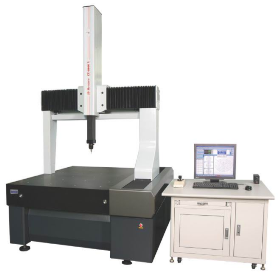
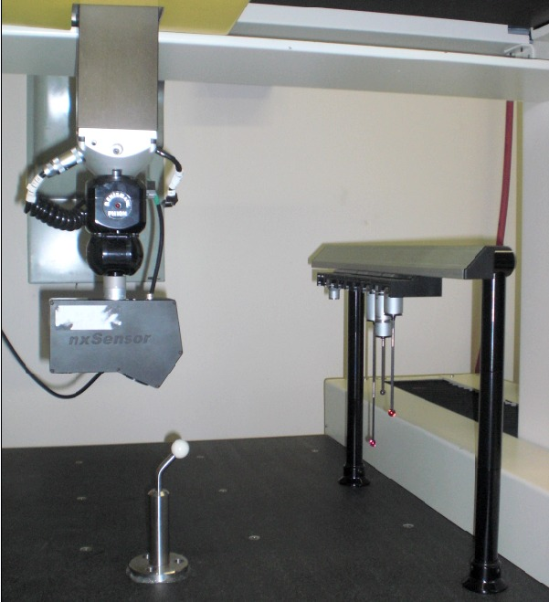
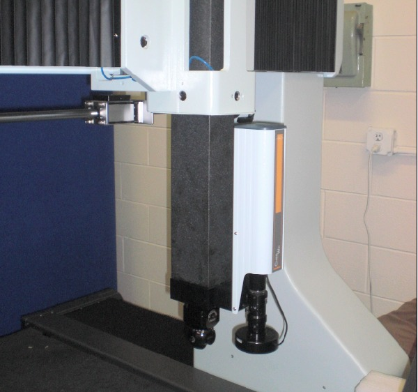

Ýlker Teke
AAT Otomasyon Yazýlým Geliþtirme Eðitim Servis Hizm. Ltd. Þti.
Ekim 2009, Ýstanbul
"Retrofit" kelimesinin anlamý "modernizasyon" olarak açýklanmakla beraber, deðiþik uygulama alanlarý ve yapýlýþ þekli ile farklýlýklar göstermektedir. Bir sistemin kabiliyetinin arttýrýlmasý; mekanik, donaným veya yazýlým olarak yenilenmesi anlamlarýna gelmektedir. Revizyondan farklý olarak, mevcut sistem üzerinde sisteme yeni adaptasyonlar yapýlmaktadýr. Bir konvansiyonel torna ve freze tezgahýnýn CNC kontrollü hale getirilmesi, bir fabrikadaki mevcut otomasyon sistemine yeni eklentilerin yapýlmasý, bir savaþ uçaðýnýn veya tankýn yenilenmesi, yeteneklerinin artýrýlmasý verilecek örnekler arasýndadýr. Bu yazýda herhangi bir Koordinat Ölçüm Cihazý üzerinde (CMM) yapýlan retrofit (modernizasyon) uygulamalarý açýklanmaya çalýþýlmýþtýr.

Koordinat ölçme cihazýný ele aldýðýmýzda, konstrüksiyon yapýsý, kontrol ünitesi, servo motorlar, cetveller, prob sistemi, ve CMM yazýlýmý, bilgisayar donanýmý ana bileþen olarak karþýmýza çýkmaktadýr. Köprülü tipteki bir ölçme cihazýný düþünülürse, parçayý konumlandýrmak için tabla, hava yastýklarý, okuyucu cetveller, rulmanlar, baðlantý kablolarý içermektedir. Kontrol sistemi ise, yazýlýmdan gelen komutlarýn servo motorlarý tetikleyerek parça üzerinde prob sistemi ile gerekli bilgilerin alýnmasý saðlamaktadýr. Prob sistemi ise deðiþik özeliklere sahip olmakla birlikte, dokunarak parça üzeriden pozisyonlarý almaktadýr.
Yazýlým, parça üzerinde alýnan verileri matematik model çerçevesinde analiz edip kalite kontrolünü yaparak, grafik ve yazýlý olarak raporlama yapmaktadýr..
Neden retrofit?
Her hangi bir koordinat ölçme tezgahýnýn modernize edilme ihtiyacý, genellikle yazýlýmýn yetersiz olmasýndan kaynaklanmasý ile birlikte, kontrol sisteminin eski olmasýndan dolayý istemsiz hareketlere sebebiyet vermesi, tezgahýn istenilen verimde çalýþmamasý, prob sisteminin yetersiz olmasý, bilgisayar donanýmýnýn yetersiz olmasý gibi durumlar olarak nitelendirilebilir. Bunlarýn dýþýnda, koordinat ölçme cihazý için yurt dýþýndan servis alamayan kullanýcýlar, ayný þekilde tezgahýn kendi firmasýndan baþka diðer firmalardan kalibrasyon hizmeti alamamasý, kalibrasyon hizmetinin yüksek ücretler karþýlýðýnda yapýlmasý, kullanýcýlarý tezgahlarýný revizyon (retrofit) yapmalarýna sebebiyet vermektedir.
Birçok CMM yazýlýmýnýn yetersiz olmasý, hýzlý ve esnek programlamaya müsaade etmemesi ve özellikle CAD MODEL ile çalýþma imkaný vermemesi de modernize edilme ihtiyacýný doðurmaktadýr. Koordinat ölçme tezgahýnýn konstrüksiyon yapýsý eskimemekle birlikte, zamanla yazýlýmlarýn günümüz ihtiyaçlarýna cevap verememesi, geometrik toleranslandýrmalarda zamanla eklentilerin olmasý, grafiksel raporlamalarýn sürekli deðiþiklik göstermesi, farklý firmalarýn rapor formatlarýný istekleri doðrultusunda talep etmeleri, birçok koordinat ölçme cihazýnýn CAD model ile çalýþma imkaný saðlamamasý, modernizasyon iþleminin yapýlmasý kaçýnýlmaz hale getirmektedir.
Modernizasyon çeþitleri birçok deðiþik þekilde yapýlmakla beraber, genellikle yazýlýmýn yetersizliði durumunda sadece kontrol sisteminin deðiþtirilmesi ile bu sorun aþýlmakta, mekanik ve yazýlým üzerinden kalibrasyon yapýlarak yeni bir koordinat ölçme cihazý gibi kullanýma hazýr hale getirilmesi mümkündür. Fakat asýl sorun, retrofit iþleminin yüksek maliyetler içermesidir. Üstelik sisteme geliþmiþ bir prob sistemi ilave edilmesi durumunda, bu iþlem yeni bir koordinat ölçme tezgahý maliyetine yaklaþmaktadýr. Çýkan maliyetler göz önüne alýndýðýnda modernizasyon pek tercih edilmeyen bir iþ haline gelmektedir.
Maliyetleri düþürmek için makinenin eski servo sistemlerini kullanarak makineye baðlanan kontrol kartý ile bu sistem çok daha ekonomik hale gelmekte ve firmalar tarafýndan özellikle tercih edilmektedir. Hareket kontrolü için komutlar kontrol kartýndan verilerek eski servo sistemler yardýmýyla bu istenilen verim elde edilmekte ve yeni yazýlýmla birlikte sistem yenilenmiþ olmaktadýr.
Upgrade Nedir?
Sözlük anlamý "yükseltme" olup, herhangi bir elektronik veya mekanik uygulama gerektirmeyen sistemler için yapýlmaktadýr. CMM yazýlýmý geliþtiren firmanýn kontrol sistemleri için arayüz dosyalarý geliþtirerek, bazý markalardaki CMM cihazlarýna direkt olarak baðlanýlabilmekte ve maliyetler gittikçe daha da düþük hale gelmektedir. Böylece sadece yazýlým yükleyerek ve kalibrasyon yapýlarak modernizasyon iþlemi gerçekleþtirilmiþ olur. Baþka bir modernizasyon (retrofit) türü ise koordinat ölçme cihazýna seri baðlanmaktýr. Bu sistemde ise sistem mevcut bilgisayarý ve mevcut eski yazýlýmýný koruyarak, ikinci bir bilgisayar ve baðlantý kablolarý ile sistemle uyumlu hale getirilmektedir. Hiçbir elektronik revizyon yapýlmadan, sistem direkt çalýþtýrýlmaktadýr.
Bunlara ek olarak, portatif kollu ölçme kollarýnýn yazýlýmlarýnýn yetersiz olmasý durumunda da herhangi bir elektronik revizyon gerektirmeden, direkt olarak yeni bir yazýlýmla uyumlu hale gelmektedir. Yapýlan bu iþlemle cihazýn kabiliyetini artýrmakta olup, "upgrade" grubuna girmektedir. Böylece hiçbir elektronik revizyon olmadan bu sistemler güncel hale gelmekte ve yazýlýma yeni modüller eklenerek birçok amaç için kullanýlmasý mümkün olmaktadýr. Eðer donanýmla uyumlu LASER kafa adaptasyonu temin edilmesi durumda tersine mühendislik amacýyla kullanýlmasý mümkündür.

Update nedir?
Update ise, koordinat ölçme cihazýnýn mevcut üzerindeki yazýlýmýnýn versiyonun yükseltilmesi iþlemidir. Fakat çok eski versiyonlar, donanýmý yeterli olmayan bilgisayar özellikleri ve baðlantý kablolarýnýn uyumsuzluðu nedeniyle sistemlerin modernize edilmesi (retrofit) gerekmektedir. Kontrol kartýnýn sisteme uyumlu hale getirilmesiyle yazýlým güncellenmesi mümkün olmaktadýr.
En geniþ kapsamlý modernizasyon iþlemini ele alýrsak, koordinat ölçme cihazýnýn cetvelleri, okuyucu kafalarý, prob sistemi, kontrol sistemi, bilgisayarý ve yazýlýmý komple deðiþtirilmekte ve tezgahýn kalibrasyonu yapýldýktan sonra yeni bir koordinat ölçme cihazý gibi kullanýma hazýr hale gelmektedir
Retrofit sadece sorun yaþandýðýnda mý yapýlýr?
Modernizasyon (retofit) sadece yazýlýmýn yetersiz kaldýðý veya kontrol sistemi ile ilgili bir sorun olduðunda deðil, mevcut donanýmýn veya cihazýn kabiliyetinin arttýrýlmasý durumlarýnda da yapýlabilir.
Örneðin, bir firmada imal edilen parçalarýn Koordinat Ölçme Cihazý ile sadece kalite kontrolü ve raporlanmasý yapýlmakta, tarama özelliði ile kýsmen tersine mühendislik çalýþmalarý yapýlmaktadýr. Tam anlamýyla tersine mühendislik çalýþmalarý için LASER kafa adaptasyonu ve bununla birlikte yazýlýma LASER modülü eklenmesiyle, yüksek maliyetli yeni bir cihazýn yatýrýmýnýn önüne geçilmiþ olunur. Böylelikle koordinat ölçme cihazý hem kalite kontrol, hem de tersine mühendislik için kullanýlýr hale gelmiþ olacaktýr.

Ayný þekilde, plastik parça veya çok küçük parça üreten kalýpçýlarýn tercih ettiði kamera ile ölçme, kalite-kontrolde öncelikli ihtiyaçlar arasýndadýr. Yeni bir kameralý ölçme sistemi yatýrýmý yerine, baðlantýsý ve adaptasyonu pratik olan kamera ile cihazýnýzý hem prob, hem de kamera ile ölçer duruma getirebilirsiniz. Bu sistem için gereken kamera ve ölçme yazýlýmýdýr. Ölçüldüðünde deformasyona uðrayan, esneyen plastik parçalar veya çok küçük kalýplar parçalarý ölçmek için kamera ile ölçme, firmalar tarafýndan tercih edilmektedir.
Diðer bir örnek ise, özelikle savunma ve havacýlýk firmalarý, bunun yanýnda medikal parça üreten firmalar ve otomotiv sanayisi için motor bloðu üreten firmalarýn tercih edebileceði 5 eksenli probu adaptasyonu için modernizasyon gerekmektedir. Deðiþik yüzey formuna sahip parçalarýn daha hýzlý ve hassas ölçülmesi, diðer lazer ve prob sistemlerinin yeterli olmadýðý durumlarda 5 eksenli prob sistemi büyük avantaj saðlamaktadýr. Özellikle deðiþken yüzey formuna sahip parçalarýn ölçümünde büyük avantajlar saðlanmaktadýr.
Retrofit konusunda maliyetlerin yüksek olmasý, birçok firma modernizasyon iþlemine pek sýcak bakmamaktadýr. Fakat geliþen teknoloji özellikle koordinat ölçme cihazlarýnýn modernizasyon maliyetleri azalmýþ ve bu konuda gerekli hizmeti verebilecek altyapý oluþmuþtur. Gerek elektronik kontrol sistemlerinin maliyetinin düþmesi, gerek yazýlýmýn sürekli geliþtirilmesi, "kamera ve lazer kafa" gibi donanýmlarýn maliyetinin düþmesi, modernizasyon yapýlmasýný kolaylaþtýrmaktadýr.
|